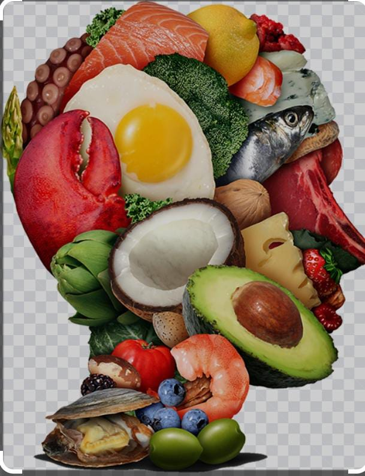

Physical Health:
Proper nutrition provides the body with essential nutrients, vitamins, and minerals needed for growth, repair, and energy. A balanced diet helps prevent chronic diseases such as obesity, diabetes, heart disease, and certain cancers.
Mental Health:
There is a strong link between nutrition and mental health. Nutrient-rich foods can improve mood, cognitive function, and mental clarity. Deficiencies in certain nutrients, like omega-3 fatty acids and B vitamins, have been associated with anxiety and depression.
Immune Function:
Good nutrition supports a strong immune system. Nutrients such as vitamins A, C, D, and zinc play vital roles in immune response, helping the body fend off infections and illnesses.
Weight Management:
Understanding and practicing good nutrition can aid in weight management. Balanced meals and appropriate portion sizes help maintain a healthy weight, reducing the risk of obesity-related conditions.
Energy Levels:
he food we eat is our primary source of energy. Consuming a variety of foods can help sustain energy levels throughout the day, improving productivity and overall quality of life.
Growth and Development:
For children and adolescents, proper nutrition is essential for growth and development. Nutrient-rich diets support physical development, cognitive abilities, and long-term health.
Longevity:
A healthy diet can contribute to a longer, healthier life. Eating a variety of whole foods can help reduce the risk of age-related diseases and promote overall vitality
.